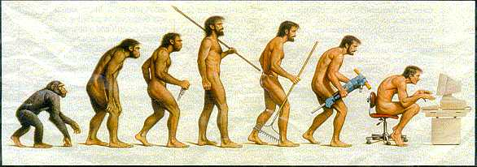
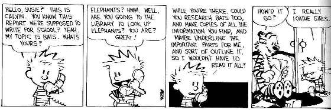

Fósiles de homínidos: Preguntas frecuentes
- ¿Por qué has escrito estas páginas?
- ¿Por qué molestarse en refutar los argumentos creacionistas sobre la evolución humana?
- Si evolucionamos de los simios, ¿por qué todavía hay simios hoy?
- ¿Cuáles son tus credenciales?
- ¿A dónde fuiste de vacaciones en verano?
- ¿Conoces la dirección de correo electrónico de Richard Leakey?
- ¿Hay una copia de esa imagen del "Progreso" en la web?
- ¿Harás mi tarea por mí?
- ¿Puedes identificar este cráneo/fósil/huella que he encontrado?
- ¿Por qué no debates con Kent Hovind y/o reclamas su recompensa de $250,000 por evidencia de la evolución?
- ¿Por qué no aceptas el desafío de Walter Brown a un debate escrito?
- Detalles técnicos
¿Por qué ha escrito estas páginas?
A mediados de 1994, me di cuenta de que, a pesar del considerable interés popular en el origen humano, el archivo talk.origins contenía casi ninguna información sobre el tema. El archivo también carecía de respuestas a los argumentos creacionistas sobre la evolución humana, una omisión grave considerando la importancia de la evolución humana en el debate entre creacionismo y evolución. Aunque existen bastantes libros sobre la evolución humana escritos para el público general, estos generalmente mencionan solo algunos de los fósiles más importantes, dispersos por todo el libro y a menudo descritos de manera incompleta. Sentí que había necesidad de una lista concisa de los fósiles homínidos más importantes.
Compilar una lista de este tipo fue más difícil de lo que suena. Aunque existían muchos libros populares sobre la evolución humana, ninguno de ellos contenía detalles sobre la mayoría de los fósiles importantes, por lo que fue necesario utilizar muchas fuentes. (El nuevo libro From Lucy to language (Johanson y Edgar, 1996) resuelve en gran medida este problema y también contiene una galería de fotografías excelentes de muchos fósiles importantes.)
La primera versión de estas páginas se colocó en el archivo talk.origins en noviembre de 1994, y desde entonces ha crecido constantemente en tamaño y completitud. Creo que es el tratamiento más exhaustivo del creacionismo y la evolución humana que se puede encontrar en o fuera de la web, y me comprometo a mantenerlo así.
¿Por qué molestarse en refutar los argumentos creacionistas sobre la evolución humana?
Because creationism is dreadful science. In fact, it's not science so much as a campaign to evangelize fundamentalist religion. Creationists are corriendo asustado from the evidence for human evolution, as well they should be. They have no good explanation for the fossils, and human evolution is a topic on which the creationists are especially vulnerable because they can't afford any compromise. If humans evolved, then the whole rationale for creationism collapses.Como varias personas me han señalado, los creacionistas es poco probable que cambien de opinión, independientemente de la evidencia o de cuántas veces sean refutados. Sin embargo, hay muchos observadores neutrales que pueden ser persuadidos si se les muestra cuán defectuosa es la "ciencia" creacionista.
¿Por qué el creacionismo representa una mayor amenaza que otras pseudociencias igualmente absurdas, como la astrología? La diferencia radica en que los astrólogos no se dedican a una campaña altamente organizada y bien financiada para que se enseñe su pseudociencia en las escuelas. Ignorar el creacionismo no funciona y no hará que desaparezca. Por supuesto, los creacionistas no desaparecerán si se les opone, pero es posible evitar que sus creencias religiosas se enseñen como ciencia. Organizaciones como el National Center for Science Education han sido muy efectivas en esto: ¡por favor, considere apoyarlas!
Jeff Shallit hace el mismo punto de manera muy efectiva en uno de sus ensayos:
"... el debate sobre la creación/evolución no se trata de convencer a los creacionistas. Sería tan inútil como discutir con un calamar. El debate se trata de educar al público en general -- el mismo público cuyos representantes electos aprueban leyes, seleccionan libros de texto, establecen currículos y financian investigaciones."
Si evolucionamos de los simios, ¿por qué todavía existen simios hoy?
Huh?? Scientists think that one group of apes, in response to their environment, started evolving in a way that would eventually lead to humanity (and many other now-extinct hominids). Why on earth should that cause the descanso of the apes to go extinct? It's as silly as saying "If I am descended from Irish ancestors [which I am], why are there still Irish people around?" (Sí, soy consciente de que no he evolucionado de mis antepasados irlandeses; el punto es que lo que sucedió a mis ancestros no afectó al resto de la población irlandesa.)Si no me cree, tenga en cuenta que la principal organización creacionista Answers in Genesis está de acuerdo conmigo y ahora incluye este argumento en su página web Argumentos que creemos que los creacionistas NO deben usar.
¿Cuáles son sus cualificaciones?
A number of people have wanted to know what my qualifications are for writing on human evolution and maintaining these web pages. In a word: none. (I do have qualifications, but they are totally unrelated to paleoanthropology.) These pages, and the effort that went into writing them, will have to serve as their own qualifications. I have read a lot of both scientific and popular literature to make them as accurate as possible. Many people, including university professors and even some paleoanthropologists, have made positive comments about them, so I am confident that my summary of human evolution is generally accurate. If you find any errors (sigh), avísame.¿A dónde fuiste de vacaciones en verano?
Actually, no one's ever asked this, pero déjame contártelo de todos modos, since it's relevant to what this website is about.¿Sabes el correo electrónico de Richard Leakey?
Well, I have an email address that I have been told is his, but I've never used it. I won't give it out because he is a busy man and probably doesn't want to hear from everyone who would like to drop him an email. If you have a good reason to get in contact with him, take the time to write by normal mail (P.O. Box 24926, Nairobi, Kenya, according to one website).¿Hay una copia de esa imagen "March of Progress" en la web?
This famous graphic shows a sequence of primates walking from left to right, starting with small knuckle-walking apes, graduating through a series of ape-men, and finishing with a modern Cro-Magnon male. It was drawn by Rudy Zallinger and first published in Hombre primitivo, a 1970 Time-Life book written by paleoanthropologist F. Clark Howell. It has become a cultural icon, endlessly copied and parodiado (and even tatuado!). A copy of the original drawing puede encontrarse aquí (click on the small image there to see a full-sized one).{kind=link}
El dibujo a menudo crea una impresión errónea de la evolución humana como una progresión constante desde los simios hasta los humanos. Siempre se ha sabido que no todas las especies de esa serie fueron antepasados humanos (por ejemplo, los australopitecos robustos).

¿Harás mi tarea por mí?
No one's ever put it quite so baldly (though a few people come close), but that's the gist of some messages I get. The answer is, of course, no. Most of the information I have readily available is already on my web pages. If you want detailed information that's not in my pages, I'm not able or willing to spend hours collating it for you, especially since it is probably already in your local library. If all you need is a pointer to get started in the right direction, or have a question that you haven't been able to find an answer to, I podría be able to help (but check my Lectura adicional page first). Precise questions that can be answered quickly have a far greater chance of getting a response than do than vague, broad-ranging ones. Here's a perfect example of how no to do it:Soy estudiante de la Universidad de Malta y estoy cursando un grado en BA en Historia de la Civilización. Uno de mis temas es la evolución del ser humano, las etapas que pudo haber atravesado y la evidencia dejada posteriormente.(sigh) How does someone this stupid get to university?Agradecería mucho si pudiera ayudarme y le agradezco su tiempo e interés,

¿Puede identificar este cráneo/fósil/huella que he encontrado?
Nope. I have no anatomical training. And even if I did I doubt that I could identify something from a grainy photograph. Your best bet is to take it to a major museum, or a university geology/paleontology department.¿Por qué no debates con Kent Hovind y/o reclamas su recompensa de $250,000 por evidencia de la evolución?
Porque la oferta es tan falsa como un billete de $3, y está diseñada para ser incumplible. No está claro si Hovind quiere "evidencia" o "prueba" de la evolución. Menciona ambos, pero son cosas completamente diferentes. Además, el requisito de Hovind para la prueba (demostrar que no existe ninguna otra posible definición para la evidencia) es ridículo. No puedo pensar en nada que pueda probar a ese nivel de certeza. Hovind también es muy evasivo sobre cómo se juzgaría la evidencia. Ha afirmado que el comité de jueces no está compuesto por creacionistas, pero se niega a decir quiénes son.
Un amigo mío estaba interesado en la oferta de Hovind, y se enteró de él exactamente qué implicaría aceptar el "reto":
Hablé con Hovind sobre su oferta de $250,000 más tarde esta tarde. Él hizo muy claro que solo renunciaría al dinero si alguien pudiera reproducir el Big Bang en un laboratorio, producir materia a partir de la nada, o vida a partir de la no-vida.Presumably Hovind also thinks that astronomy isn't a science unless we can create a star in a lab.
Me encantaría debatir con Hovind sobre la evolución humana a través de páginas web. Sin embargo, apenas parece tener mucho sentido, ya que gran parte de lo que dice ya ha sido refutada en mi sitio web. He visto a Hovind hablar sobre la evolución humana, y definitivamente cae en el extremo más incompetente del espectro creacionista. Incluso cree en las huellas de Paluxy, que la mayoría de los creacionistas "respetables" abandonaron hace más de una década.
Pero, curiosamente, Hovind se niega a debatir en internet, aparentemente afirmando que es una pérdida de su tiempo. (Yo habría pensado que el público potencial es tan grande que sería un uso mucho más efectivo de su tiempo que recorrer todo Estados Unidos.)
La razón de su rechazo es probablemente que el estilo de debate de Hovind, que consiste en una lluvia de necedades científicas infundadas, palabras huecas y chistes cursis, no se traduce bien al lenguaje escrito. Un debate de pie no permite el tiempo necesario para investigar los temas en profundidad o para demostrar cuán inútiles y deshonestos son los argumentos de Hovind. Incluso Answers in Genesis considera a Hovind como algo así como una vergüenza para la causa creacionista.
La cuestión de debatir con Hovind es ahora irrelevante en cualquier caso, ya que actualmente está cumpliendo una sentencia de prisión de 10 años por fraude fiscal.
A continuación se presentan algunos sitios web sobre la "oferta" de Hovind, sus afirmaciones "científicas" y su falso "doctorado":
- La oferta de $250,000 de Kent Hovind
- La disertación que Kent Hovind no quiere que leas
- Análisis de Kent Hovind
- ¿Qué tan buenos son esos argumentos de la Tierra joven?
¿Por qué no aceptas el desafío de Walter Brown a un debate escrito?
For many reasons. One: I'm not sufficiently knowledgeable about many of the areas Brown wants to debate in (not that I think Brown is either, I should add). Two: sus términos de debate propuestos entail a ridiculous amount of work and overhead. Brown is retired and might have that much time; I don't. Three: even if I had the time, Brown isn't worth that much effort. Even most creationists think his 'hydroplate theory' is bunk. Four: He respondido al material de Brown sobre la evolución humana, on a mailing list which used to be at his website, and Brown never responded. Brown seems to be all talk and no action when it comes to debating. Others I know have had similar experiences. See: Más sobre la oferta de debate de Walter BrownDetalles técnicos
As of September 2008, the Fossil Hominids website contains 410 files, occupying about 5,700,000 bytes. There are 172 html files; most of the other files are graphical images.Dado que este es un sitio informativo, intento evitar el uso de HTML avanzado, limitándome a etiquetas que prácticamente todos los navegadores deberían poder manejar. No hay animaciones, no hay material Flash y no hay marcos (son un parche mal diseñado). Los archivos gráficos se utilizan solo donde son útiles, y trato de mantener su tamaño reducido. Mantengo los detalles de visualización fuera del código HTML, utilizando una hoja de estilos para controlar la presentación de todas las páginas HTML del sitio.
Edito archivos HTML a mano, usando muy ocasionalmente Perl para realizar cambios globales. Utilizo editores de texto que me muestran el HTML crudo, porque muchos editores HTML (como FrontPage de IE o Netscape Composer) hacen cosas horribles con el HTML cuidadosamente formateado y añaden todo tipo de basura. Solía usar Emacs como editor, pero recientemente he estado usando Arachnophilia, un editor HTML gratuito ('careware') que puedo recomendar totalmente.
Utilizo Xenu Link Sleuth para verificar la validez de los enlaces internos y externos.
Ocasionalmente uso el Validador HTML del Grupo de Diseño Web para verificar que mi html sea válido.
Esta página es parte del FAQ sobre homínidos fósiles en el Archivo talk.origins.
Página de inicio |
Especies |
Fósiles |
Creacionismo |
Lectura |
Referencias
Ilustraciones |
Novedades |
Comentarios |
Búsqueda |
Enlaces |
Ficción
http://www.talkorigins.org/faqs/homs/faqs.html, 31/07/2009
Copyright © Jim Foley
|| Envíame un correo electrónico